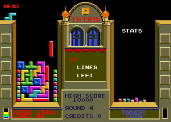
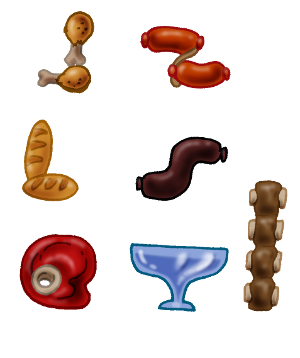
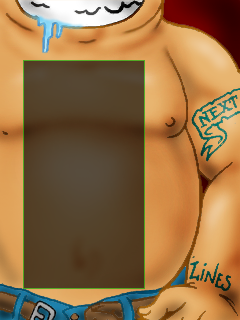

El objetivo de este documento es definir brevemente en que consiste el proyecto de videojuego Asadetris y cuales serán sus funcionalidades.
Asadetris es un videojuego de habilidad similar a Tetris: El jugador debe acomodar figuras sobre un tablero para formar lineas horizontales.
Esta es una imagen de la pantalla original del juego que nos sirve de inspiración:
En este juego las piezas bajan a una determinada velocidad
Originalmente en el juego Tetris se utilizan piezas compuestas de cuatro bloques. En Asadetris la piezas tienen un aspecto visual muy diferente, las piezas son porciones de comida:
El escenario de juego es el sistema digestivo de una persona (bueh, sin entrar en muchos detalles). A grandes rasgos el escenario se parece a lo siguiente:
Adicionalmente el juego permite cambiar el aspecto visual desde una opción del menú Setup.
Hay solo dos temas visuales, un modo ambientado en comida y otro clásico con bloques de colores.
Todo el juego está dividido en diferentes escenas, aquí se enumeran las mas importantes:
Durante el menú del juego el usuario puede utilizar tanto el teclado como el mouse.
En la escena de juego solo puede usar el teclado:
Para regresar al menú principal el usuario puede pulsar la tecla Escape o hacer click sobre un botón que se observa en pantalla.
A medida que el usuario va realizando lineas en la pantalla, el juego se hace cada vez mas difícil. Cada 10 lineas realizadas el juego avanza un nivel y con ello hay un aumento de velocidad.
Al entrar en el juego el usuario puede elegir uno de tres modos de juego: fácil, medio o experto. Lo único que difiere de estos modos es el nivel inicial. Por ejemplo, si el usuario ingresa en modo medio su nivel inicial será 5 (relativamente rápido).
Se quiere brindar al usuario la posibilidad de ingresar su nombre si ha realizado un buen puntaje. Para eso el juego evalúa el puntaje del jugador una vez que pierde.
En el puntaje también cuenta el nivel de dificultad que ha elegido. Esto cuenta porque la cantidad de puntos que hace una persona jugando en modo difícil son mas valiosos que alguien que inicia en modo fácil, por dar un ejemplo.
Esta diferenciación de modos se hace en la misma pantalla de puntajes. Ahí se muestra el nombre de la persona, la cantidad de lineas y el nivel de dificultad; todo esto se muestra en una sola pantalla y se puede consultar directamente ingresando a una opción del menú principal.